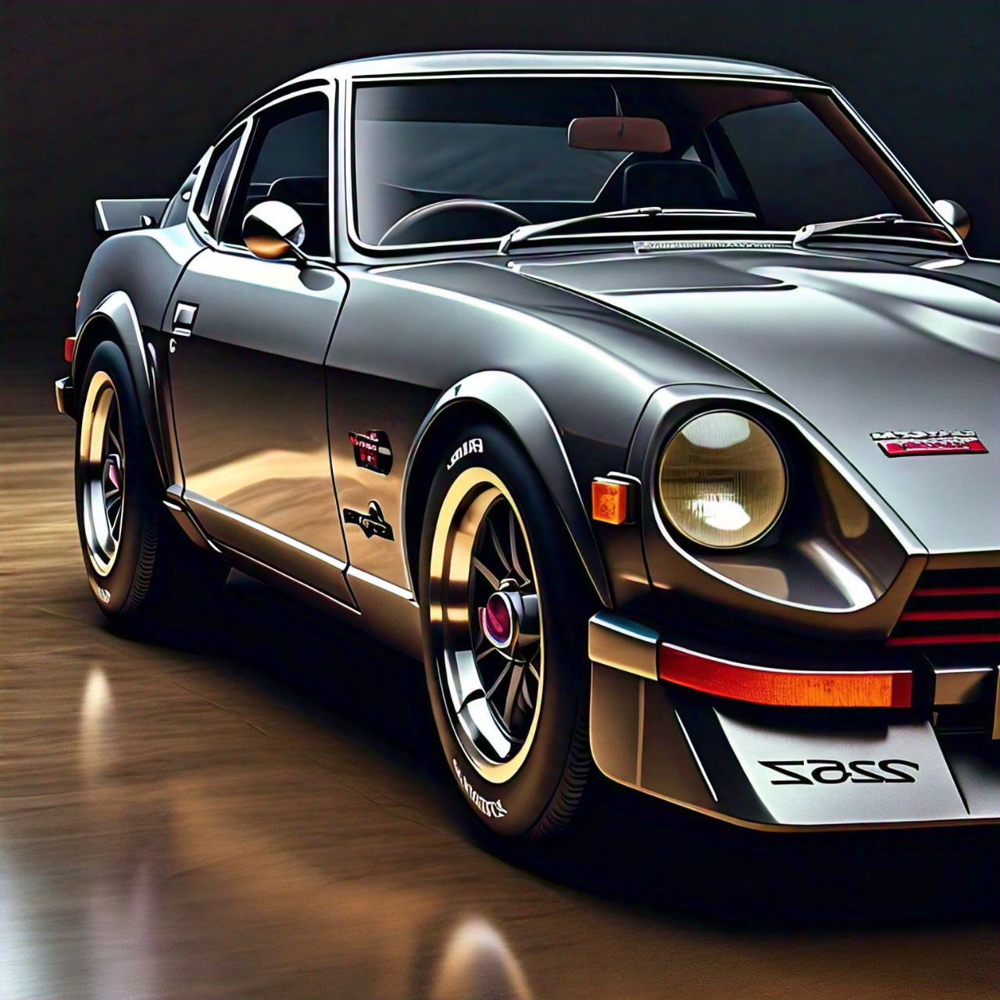
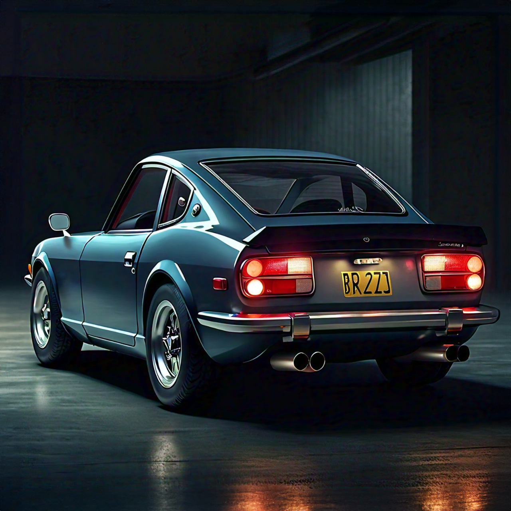

epoch
OVERVIEW:
The Epoch provides a comfortable cruise. The raw sound of the naturally aspirated V6 is the sound of perfection. Emphasising the experience, the engine block is hollowed out and connected to the interior of the car. This allows you to feel the motion of the engine while driving. The design, inspired by Datsun boasts the look of the 1960s-70s Japanese era. The impressive 340 horsepower coming from 6 cylinders partners with the low weight of the car to provide an extreme power to weight ratio. Although not being the most powerful car, it's low weight makes up for it. Hence creating a unique, fast and raw driving experience.
SPECIFICATIONS:
| Horse power | 340 hp |
|---|---|
| Torque | 580 Nm |
| Engine | v6 - Gallo 12 |
| Induction | NA |
| Weight | 1440kg |
| Top speed | 240 km/h |
| Red Line | 7000+ RPM |
| efficiency | 11L/100km |
COLOURS:
Purchase - $78,980